컴퓨터활용능력-1급 (2003-07-13 기출문제)
1과목: 컴퓨터 일반
1. 플로터(plotter)를 직렬 포트(serial port)에 연결하여 사용하고 있을 때 전송 속도의 단위로 가장 적절한 것은?
- CPS
- BPS
- IPS
- DPI
(정답률: 64%)

2. 웹 브라우저인 인터넷 익스플로러의 사용법에 대한 다음 설명 중 가장 옳은 것은?
- [Esc] 키를 누르면 현재 표시하고 있는 페이지를 다시 다운로드 하여 표시한다.
- [Alt]+[Home] 키를 누르면 익스플로러 실행시 표시되는 첫 페이지(홈페이지)로 옮겨간다.
- 새로 고침(Refresh) 하려면 [F4] 키를 이용한다.
- [Ctrl]+[E] 키를 누르면 화면을 분할하고 왼쪽에 즐겨찾기 창을 표시한다.
(정답률: 75%)
3. 전체화면 모드에서 작업하던 중 제목 표시줄을 더블 클릭 하였을 때 다음 중 어떤 기능을 수행한 것과 동일한 결과가 발생하는가?
- 창 이동
- 창 닫기
- 이전 크기로 복원
- 창 최대화
(정답률: 75%)
4. 전자 악기간의 데이터 교류를 위한 음악의 연주 정보와 여러 가지 기능에 대한 정보를 전달할 수 있는 연주 통신 프로 토콜은?
- WAV
- RA/RM
- MP3
- MIDI
(정답률: 71%)
5. 한글 윈도우즈 98에서 [프린터 설치]에 관련된 설명 중 틀린 것은?
- 로컬 프린터와 네트워크 프린터로 구분하여 설치할 수 있다.
- PC에 직접 연결되지 않고 네트워크 상에 연결된 프린터도 기본 프린터로 설정할 수 있다.
- 하나의 시스템에 여러 대의 프린터를 모두 설치할 수 있다.
- 두 대 이상의 프린터를 기본 프린터로 지정할 수 있으며, 기본 프린터로 설정된 프린터는 삭제할 수 없다.
(정답률: 84%)
6. 다음 중 [디스크 검사]와 관련된 설명으로 가장 잘못된 것은?
- 디스크 검사를 하면 하드디스크 문제로 인하여 컴퓨터 시스템이 오동작하는 경우나 바이러스 감염을 예방할 수 있다.
- 디스크 검사에서 하드디스크의 경우 디스크 검사가 시작되면 사용자는 다른 작업을 하지 않는 것이 좋다.
- 디스크 검사의 기능은 하드디스크나 플로피 디스크에 물리적 혹은 논리적인 손상이 있는가를 검사하고 복구 가능한 오류가 있으면 이를 복구해 주는 것이다.
- 디스크 검사의 수행 과정은 [시작]-[프로그램]-[보조프로그램]-[시스템 도구]-[디스크 검사] 순으로 선택해도 된다.
(정답률: 70%)
7. 가로 300 픽셀, 세로 200 픽셀 크기의 256 색상으로 표현된 정지 영상을 10:1로 압축하여 JPG 파일로 저장하였을 때 이 파일의 크기는 얼마인가?
- 6 KB
- 60 KB
- 600 KB
- 1536 KB
(정답률: 51%)
8. 다음 중 USB(Universal Serial Bus)에 대한 설명으로 틀린 것은?
- USB의 원리는 직렬 포트와 동일하며 USB 규격 2.0은 최대 480Mbps의 데이터 전송 속도를 갖는다.
- USB 포트는 핫 플러그(Hot Plug) 기능을 지원하며 최대 63대까지 연결할 수 있다.
- 별도의 전원 장치가 필요 없는 USB 방식의 마우스, 키보드, PC 카메라 등이 연결되는 포트로 PC를 사용하는 도중에 연결해도 인식한다.
- USB 포트는 4핀으로 구성되어 있는데, 2개는 데이터 전송용이고 나머지 2개는 전원 공급용으로 사용한다.
(정답률: 72%)
9. 다음 중 [시스템 등록 정보]의 [장치관리자] 탭에 대한 설명으로 가장 잘못된 것은?
- 문제가 있거나 불필요한 하드웨어 장치는 [제거] 버튼을 클릭 하여 목록에서 없앨 수 있다.
- 각 장치의 등록정보를 이용하여 IRQ, DMA, I/O Address 등을 확인하고 변경한다.
- 컴퓨터에서 메모리와 가상 메모리의 현황과 성능 상태를 확인하고 설정 값을 변경한다.
- 원안에 노란색 ! 표시가 된 장치 아이콘은 장치에 문제가 있음을 나타낸다.
(정답률: 53%)
10. 다음의 설명과 관련된 인터넷 서비스는?
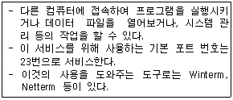
- FTP
- Gopher
- Telnet
- WAIS
(정답률: 73%)
11. 다음 중 문자 표현 코드가 아닌 것은?
- BCD Code
- ASCII Code
- EBCDIC Code
- Parity Code
(정답률: 74%)
12. IP 주소에 대한 설명으로 잘못된 것은?
- C 클래스의 기본 서브넷 마스크는 255.255.0.0 이다.
- 현재 IP 주소는 32비트로 구성되어 있다.
- B 클래스는 A 클래스보다 규모가 적다.
- C 클래스는 한 네트워크에서 254대의 컴퓨터에 IP 주소를 할당할 수 있다.
(정답률: 50%)
13. 인터넷 주소(IP)를 물리적 하드웨어(MAC) 주소로 변환하는 프로토콜은?
- ARP
- RARP
- DNS
- ICMP
(정답률: 59%)
14. 한글 윈도우즈 98의 부팅 메뉴에 관한 설명 중 거리가 먼 것은?
- Safe mode : 시스템에 문제가 있어 정상적으로 부팅이 안될 경우 윈도우98이 동작할 수 있는 최소한의 내용만 가지고 부팅한다.
- Step-by-Step confirmation : 윈도우98 부팅시 읽어 들이는 드라이버 프로그램이나 파일들을 하나 하나 확인하면서 진행한다.
- Command Prompt Only : 윈도우98 상태로 부팅하지 않고 도스 상태로 부팅을 하며 이 상태에서는 윈도우98로 전환할 수 없다.
- Logged : 윈도우98이 부팅될 때 부팅 과정을 Bootlog.txt 파일에 저장하여 부팅에 문제가 발생했을 경우 이 부팅 기록을 보면 원인을 알 수 있다.
(정답률: 69%)
15. 10진수 47을 16진수로 올바르게 표현한 것은 ?
- 2F
- F2
- A1
- 1A
(정답률: 63%)
16. 다음 중 한글 윈도우즈 98의 단축키에 대한 설명으로 가장 잘못된 것은?
- 탐색기나 내 컴퓨터 창에서 [F3] 키를 누르면 찾기 기능을 사용할 수 있다.
- 바탕화면에서 아이콘을 선택한 다음 [Alt]키 + [Enter]키를 누르면, 폴더의 내용을 표시하거나 실행파일이 실행된다.
- 바탕화면이나 탐색기에서 [F2] 키를 누르면 선택한 파일이나 폴더 등의 이름을 변경 할 수 있다.
- 탐색기나 폴더 창에서 [Ctrl]키 + [A]키를 누르면 특정 폴더 내의 모든 파일이나 폴더를 선택할 수 있다.
(정답률: 61%)
17. 다음 중 한글 윈도우즈 98의 [디스플레이 등록정보] 창의 각 탭 메뉴에 대한 설명으로 올바르지 않은 것은 ?
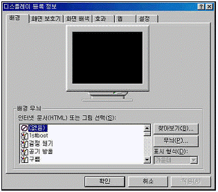
- [화면 보호기] : 시스템을 켜 둔 채 지정한 시간동안 마우스나 키보드를 사용하지 않으면 모니터를 보호하는 화면 보호기를 작동할지 여부를 설정한다.
- [설정] : 창과 그 구성 요소의 색상, 아이콘의 크기 및 간격, 기본 글꼴의 종류 등을 설정할 수 있다.
- [효과] : 내 컴퓨터, 내 문서, 휴지통 등의 아이콘 모양이나 색상 등을 변경할 수 있다.
- [배경] : 바탕 화면에서 사용할 배경 무늬나 배경그림 등을 지정할 수 있다.
(정답률: 54%)
18. 다음 중 FTP(File Transfer Protocol)에 관한 설명으로 가장 거리가 먼 것은?
- 인터넷을 통하여 어떤 한 컴퓨터에서 다른 컴퓨터로 파일을 송수신할 수 있도록 지원하는 방법과 지원하는 프로그램을 통칭한다.
- FTP 서버는 다른 컴퓨터에서 접속하여 파일을 업로드 하거나 다운로드 하는 기능을 제공하여 주는 컴퓨터를 의미한다.
- FTP 서버에서 파일을 다운받을 때 클라이언트 컴퓨터에 FTP 유틸리티(WS-FTP, Cute FTP 등)를 설치하면 보다 효율적으로 사용할 수 있다.
- Anonymous FTP 서버에서 특정 파일을 다운로드 받기 위해서는 반드시 계정을 가지고 있어야 한다.
(정답률: 80%)
19. 다음은 인터넷 전자 우편 시스템에 대한 설명으로 가장 잘못된 것은 ?
- 인터넷 전자 우편 시스템은 전세계에 연결된 인터넷 망을 통하여 인터넷 이용자간에 전자 우편을 주고받게 해 주는 시스템이다.
- 전자 우편 시스템은 여러 명에게 동시에 같은 내용의 전자우편을 송신할 수 있는 기능이 있다.
- 인터넷 전자우편 시스템은 받은 전자우편의 내용을 제3자에게 송신할 수 있는 첨부(attach) 기능이 있다.
- 전자우편 주소는 일반적으로 자신의 계정(ID)과 도메인(Domain) 이름을 @ 기호로 연결하여 표시한다.
(정답률: 77%)
20. 다음 중 압축에 관한 설명으로 가장 적절하지 않은 것은?
- 압축 대상에 따라 파일 압축, 디스크 압축, 실행 파일로 압축 등이 있다.
- 파일을 압축하는 목적은 저장 공간의 절약과 통신 속도의 향상이다.
- 파일 압축 프로그램에는 ARJ, PKZIP, RAR, LHA 등이 있다.
- 압축 파일을 재 압축하는 방식으로 파일의 크기를 계속 줄일 수 있다.
(정답률: 75%)
2과목: 스프레드시트 일반
21. 다음 중 3차원 효과의 원형 차트에 대한 설명으로 옳지 않은 것은?
- 마우스의 왼쪽 버튼을 누른 상태에서 드래그 하여 조각을 분리할 수 있다.
- [데이터 계열서식]에서 첫 번째 조각의 각을 조정하여 그래프를 회전시킬 수 있다.
- 각 조각을 동일한 색상으로는 바꿀 수 없게 되어 있다.
- 그래프에 레이블을 표시하게 하면 범례가 없어도 된다.
(정답률: 62%)
22. 다음 중 조건부 서식에 대한 설명으로 옳지 않은 것은?
- 조건을 수식으로 입력할 경우에는 수식 앞에 등호(=)를 반드시 입력하지 않아도 된다.
- 수식의 결과는 참이나 거짓의 논리 값이어야 한다.
- 셀 값이 조건과 일치하거나 수식 결과가 참일 때만 지정한 서식이 적용된다.
- 해당 셀이 여러 개의 조건을 동시에 만족하는 경우에는 제일 먼저 지정한 조건의 서식으로 설정된다.
(정답률: 69%)
23. 다음 중 매크로 기록 대화상자에 대한 설명으로 잘못된 것은?
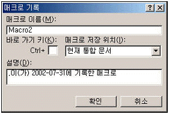
- 매크로 이름에는 공백을 포함할 수 없다.
- 매크로 저장 위치로 현재 통합문서, 새 통합문서, 개인용 매크로 통합문서가 있다.
- 설명은 엑셀에서 기본적으로 설정해 놓았기 때문에 사용자가 임의로 수정할 수 없다.
- ‘Macro2’는 매크로를 기록할 때 엑셀에서 기본적으로 설정한 이름으로 사용자가 수정할 수 있다.
(정답률: 74%)
24. 다음 수식의 결과가 나머지와 다른 것은?
- =MOD(10,3)+ROUND(4.456,0)
- =ROUNDUP(4.35,0)+IF(NOT(0),1,0)
- =TRUNC(5.5)
- =INT(ABS(-5.3))
(정답률: 54%)
25. 다음 중 데이터가 입력되어 있는 여러 개의 셀을 범위로 설정한 후, 셀 병합을 지정하였을 때의 결과에 대한 설명으로 올바른 것은?
- 기존에 입력되어 있던 데이터들이 한 셀에 모두 표시된다.
- 데이터가 들어있는 여러 셀을 병합할 수 없다.
- 가장 아래쪽 또는 오른쪽의 셀 데이터만 남고 나머지 셀 데이터는 모두 지워진다.
- 가장 위쪽 또는 왼쪽의 셀 데이터만 남고 나머지 셀 데이터는 모두 지워진다.
(정답률: 65%)
26. 다음 워크시트에서 1학년(B3:F6), 2학년(I3:M6)의 시간표를 합하여 전체 시간표를 작성하려고 할 때, [B10:F13] 영역의 배열 수식으로 적당한 것은?
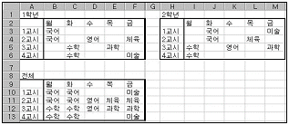
- {=MATCH(B3:F6,I3:M6)}
- {=CONCATENATE(B3:F6,I3:M6)}
- ={MATCH(B3:F6,I3:M6)}
- ={CONCATENATE(B3:F6,I3:M6)}
(정답률: 63%)
27. 다음 그림과 같이 판매량의 변화(I2:L2)와 단가의 변화(H3:H5)에 따른 총이익(I3:L5)의 변화를 한번에 계산하고자 할 때의 작업 절차에 대한 설명으로 잘못된 것은?
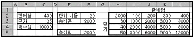
- [데이터]-[표]를 실행한다.
- 판매량과 단가를 이용하여 총이익을 구하는 수식을 H2 셀에 입력한다.
- 표를 작성할 범위로 [I3:L5] 영역을 지정한다.
- [표]의 대화상자에서 “열 입력 셀”에 C3 셀을, “행 입력 셀”에 C2 셀을 지정한다.
(정답률: 49%)
28. 다음 중 전체 데이터를 이용하여 대리점별로 1분기, 2분기, 3분기, 4분기의 매출액을 비교하여 하나의 차트로 나타내고자할 때 적합하지 않은 차트는 어느 것인가?
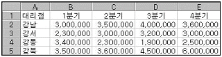
- 분산형
- 원형
- 도넛형
- 막대형
(정답률: 56%)
29. 다음 워크시트에서 지급액(B2:B5)을 현재의 값에 ‘추가지급분(D2)’를 더한 값으로 변경하고자 할 때 필요한 기능을 순서대로 올바르게 나열한 것은?
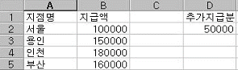
- [편집]-[복사], [편집]-[선택하여 붙여넣기]
- [편집]-[복사], [편집]-[붙여넣기]
- [편집]-[잘라내기], [편집]-[붙여넣기]
- [편집]-[잘라내기], [편집]-[선택하여 붙여넣기]
(정답률: 69%)
30. 다음 워크시트에서 A열의 사원코드의 첫 문자가 ‘A’이면 50000, ‘B’이면 40000, ‘C’이면 30000의 기말수당을 지급하고자 할 때 수식으로 옳은 것은?
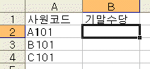
- =IF(LEFT(A2,1)="A",50000,IF(LEFT(A2,1)="B",40000,30000))
- =IF(RIGHT(A2,1)="A",50000,IF(RIGHT(A2,1)="B",40000,30000))
- =IF(LEFT(A2,1)='A',50000,IF(LEFT(A2,1)='B',40000,30000))
- =IF(RIGHT(A2,1)='A',50000,IF(RIGHT(A2,1)='B',40000,30000))
(정답률: 74%)
31. 다음 중 부분합에 대한 설명으로 옳지 않은 것은?
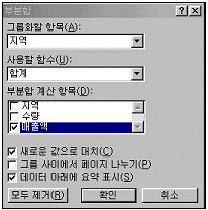
- 부분합을 어느 항목별로 계산할 것인지를 설정하려면 ‘그룹화할 항목’에서 지정한다.
- 부분합 실행 결과를 워크시트에서 모두 제거하려면 부분합 결과를 범위 지정한 후, [Delete] 키를 누르면 된다.
- 부분합과 총합계 행을 하위 수준 데이터 아래에 삽입하려면 ‘데이터 아래에 요약 표시’를 선택한다.
- 부분합으로 계산할 필드를 선택하는 것이 가능하다
(정답률: 62%)
32. 다음 중 셀에 입력한 문자가 기존에 입력한 문자와 일치하면 나머지 문자가 자동으로 채워지는 [셀 내용 자동완성기능]에 대한 설명으로 옳지 않은 것은?
- 숫자 또는 날짜만으로 구성된 내용에는 적용되지 않는다.
- [도구]-[옵션]의 [편집] 탭에서 ‘셀 내용을 자동 완성’이 설정되어 있어야 실행된다.
- 문자만으로 구성된 내용에 해당되는 사항이다.
- 나머지 글자가 자동으로 채워진 항목을 그대로 입력하려면 [Enter] 키를 입력한다.
(정답률: 56%)
33. 다음 중 사용자 정의 도구 명령을 도구모음 줄에 추가하는 작업에 대한 설명으로 잘못된 것은?
- [보기]-[도구모음]-[사용자 정의]
- [도구]-[사용자 정의]
- 도구모음 줄에서 오른쪽 마우스를 클릭 하여 단축 메뉴에서 [사용자 정의]를 클릭 한다.
- [보기]-[사용자 정의 보기]
(정답률: 62%)
34. 다음 중 창 다루기에 관련된 설명으로 잘못된 것은?
- [창]-[정렬] : 두 개 이상의 파일을 함께 볼 수 있도록 한다.
- [창]-[새 창] : 한 파일의 내용을 두 개 이상의 창을 통해 볼 수 있도록 한다.
- [창]-[나누기] : 하나의 시트를 4개의 영역으로 나누어 볼 수 있도록 한다.
- [창]-[틀 고정] : 행 단위로만 화면을 고정하여 항상 볼 수 있도록 한다.
(정답률: 59%)
35. [데이터]-[외부 데이터 가져오기]을 실행하여 텍스트 파일을 워크시트로 불러오는 작업에 대한 설명으로 올바른 것은?
- 데이터의 구분 기호로 탭과 세미콜론, 쉼표만 설정할 수 있다.
- 일단 워크시트로 불러온 텍스트 파일을 사용하려면 데이터를 다른 워크시트로 복사해야 사용할 수 있다.
- 원본 텍스트 파일이 수정되어도 불러온 데이터는 원본의 수정된 내용으로 수정할 수 없다.
- 불러온 텍스트 파일에서 필요한 열만을 선택하여 가져올 수 있다.
(정답률: 45%)
36. 다음 중 매크로 작성시에 지정하는 바로 가기 키에 대한 설명으로 올바른 것은?
- 매크로에서 지정한 것보다 엑셀의 단축키가 우선 실행된다.
- 엑셀에서 지정되어 있는 바로 가기 키를 지정하면 에러가 발생한다.
- 등록된 바로 가기 키는 [Ctrl]키 또는 [Ctrl]키+[Shift]키와 함께 실행한다.
- 바로 가기 키는 매크로를 처음 작성할 때에만 지정할 수 있다.
(정답률: 54%)
37. 다음 중 고급 필터에 관한 설명으로 옳지 않은 것은?
- 고급 필터링 결과를 데이터목록과 다른 시트에 추출할 수 있다.
- 필터링 결과는 ‘현재 위치에 필터’하거나 ‘다른 장소에 복사’ 중에서 선택할 수 있다.
- 필터링 전의 원래 데이터를 표시하려면 [데이터]-[필터]-[모두표시]를 선택한다.
- 고급 필터를 사용하려면 먼저 워크시트 상에 조건을 입력한다.
(정답률: 33%)
38. 다음 워크시트에서 금액을 단가에 수량을 곱한 것으로 계산하기 위해 [B3:E3] 영역에 입력할 배열 수식으로 적당한 것은?
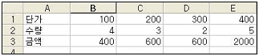
- {=B1:E1*B2:E2}
- {=B1:B2*E1:E2}
- {=B1:E1*B3:E3}
- {=B1:E2*B2:E1}
(정답률: 72%)
39. 다음 사용자 정의 폼에서 ‘결과(cmd결과)’ 버튼을 클릭하면 1에서 50까지의 합계가 아래의 텍스트상자(Txt합계)에 표시되는 프로시저를 다음과 작성하였을 때, 오류가 발생하는 부분은 어느 부분인가?
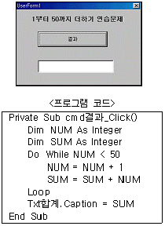
- Do While NUM < 50
- SUM = SUM + NUM
- Loop
- Txt합계.Caption = SUM
(정답률: 46%)
40. 다음 중 VBA 주요 명령문에 대한 설명으로 잘못된 것은?
- Sub … End Sub : Sub 프로시저 만들기
- Do Until... Loop : 조건을 만족하는 동안 무한적으로 실행하는 제어문
- Function … End Function : 사용자정의 함수 만들기
- Call : 프로시저 호출
(정답률: 61%)
3과목: 데이터베이스 일반
41. 다음 SQL문에 대한 설명으로 가장 올바른 것은?
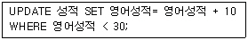
- 성적 테이블에서 영어성적이 30점보다 작은 영어성적을 10점 증가시켜라.
- 성적 테이블에서 성적이 30점보다 작은 영어성적을 30점으로 고쳐라.
- 성적 테이블에서 영어성적이 30점보다 작은 영어성적을 40점으로 고쳐라.
- 성적 테이블에서 영어성적이 30점보다 작은 영어성적을 30점 증가시켜라.
(정답률: 78%)
42. 액세스에서 데이터 형식에 대한 설명 중 가장 옳지 않은 것은?
- 텍스트 : 전화번호처럼 계산이 필요 없는 숫자나 텍스트 또는 텍스트와 숫자의 조합에 적합하다.
- 메모 : 255자 이상의 긴 텍스트 데이터를 입력하는 경우에 적합하다.
- 예/아니요 : Yes/No, True/False, On/Off 와 같이 두 값 중 하나만 갖는 필드이고 크기는 1byte이다.
- 통화 : 산술 계산에 사용되는 소수점 한 자리에서 네 자리까지의 통화 값과 숫자 데이터에 적합하다.
(정답률: 46%)
43. 폼 바닥글에 다음과 같은 도메인 계산 함수를 사용했을 때 나타나는 결과에 대해 가장 맞게 설명한 것은?
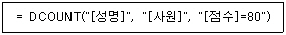
- <사원> 테이블에서 ‘점수’ 필드 값이 80인 레코드의 ‘성명’ 필드 값을 구한다.
- <사원> 테이블에서 ‘점수’ 필드 값이 80인 레코드의 개수를 구한다.
- <사원> 테이블에서 ‘점수’ 필드 값이 80이고 ‘성명’ 필드에 값이 들어있는 레코드의 개수를 구한다.
- <사원> 테이블에서 ‘점수’ 필드 값이 80이고 ‘성명’ 필드에 들어 있는 값의 종류수를 구한다.
(정답률: 60%)
44. 다음 중 기본키(Primary Key)와 외부키(Foreign Key)에 관한 설명으로 잘못된 것은?
- 기본키와 외부키는 동일한 테이블에 동시에 존재할 수 없다.
- 외부키 필드의 값은 이 필드가 참조하는 필드의 값들 중 하나와 일치하거나 널(null)이어야 한다.
- 기본키를 이루는 필드의 값은 null이 될 수 없다.
- 기본키는 개체무결성의 제약조건을 외부키는 참조무결성의 제약조건을 가진다.
(정답률: 56%)
45. <제품> 테이블에서 ‘판매일자’라는 필드에 2003년 1월1일부터 2003년 12월 31까지만 날짜만 입력되도록 하는 유효성 검사 규칙으로 가장 옳은 것은?
- in (#2003/01/01#, #2003/12/31#)
- between #2003/01/01# and #2003/12/31#
- in (#2003/01/01#-#2003/12/31#)
- between #2003/01/01# or #2003/12/31#
(정답률: 75%)
46. 데이터베이스 언어에 대한 설명으로 가장 옳지 않은 것은?
- 데이터 보안, 데이터 복구, 권한 등의 관리를 위해 사용되는 언어를 데이터 제어어(DCL)라 한다.
- 데이터베이스나 테이블의 생성 또는 변경 등을 위해 사용되는 언어를 데이터 정의어(DDL)라 한다.
- 데이터 제어어는 주로 데이터베이스 관리자에 의해 사용된다.
- 데이터 구조의 삭제 또는 변경을 위해 사용되는 언어를 데이터 조작어(DML)라 한다.
(정답률: 57%)
47. 다음과 같은 이벤트 프로시저에 대한 설명 중 옳지 않은 것은?
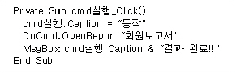
- 이름이 ‘cmd실행’인 컨트롤을 클릭 했을 때 이 프로시저가 수행된다.
- “회원보고서 결과 완료!!”라는 내용이 적힌 메시지 창이 나타난다.
- “회원보고서”라는 보고서가 인쇄된다.
- ‘cmd실행’ 컨트롤의 캡션에 “동작”이 표시된다.
(정답률: 53%)
48. 매크로 함수에 대한 설명으로 가장 잘못된 것은?
- FindRecord : 현재 폼이나 데이터시트에서 지정한 조건에 맞는 레코드를 찾는다.
- MsgBox : 경고나 메시지를 포함하는 메시지 상자를 나타낸다.
- OutputTo : 현재 데이터베이스 개체(데이터시트, 보고서, 모듈 등)를 인쇄한다.
- OpenQuery : 선택쿼리 또는 크로스탭 쿼리를 데이터시트 보기, 디자인 보기, 미리 보기 등으로 열거나 실행 쿼리를 수행한다.
(정답률: 63%)
49. 다음과 같은 직원(사원번호, 부서명, 성명, 직급) 테이블에서 부서별 인원수가 3명 이상인 부서명을 출력하는 질의문은?
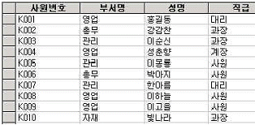
- select 부서명 from 직원 having count(*)>=3 group by 부서명
- select 부서명 from 직원 group by 부서명 having count(*)>=3
- select 부서명 from 직원 where count(*)>=3 group by 부서명
- select 부서명 from 직원 group by 부서명 where count(*)>=3
(정답률: 59%)
50. 보고서 작성시 "10중 1페이지", "10중 2페이지" 와 같은 형태로 페이지 번호를 넣으려고 한다. 컨트롤 원본으로 가장 옳은 것은? (단, 10은 전체 페이지 수)
- =[Pages] & “중” & [Page] & “페이지”
- =[Page] & “중” & [Pages] & “페이지”
- =“[Pages] & 중” & “[Page] & 페이지”
- =“[Page] & 중” & “[Pages] & 페이지”
(정답률: 68%)
51. 작성된 컨트롤을 클릭한 후 [Shift] 키를 누른 상태에서 [→] 키를 눌렀을 때, 실행되는 작업은?
- 컨트롤 속성 대화 상자가 표시
- 컨트롤 복사
- 컨트롤 이동
- 컨트롤 크기 조정
(정답률: 58%)
52. 관계 편집 대화상자에서 다음 그림과 같이 설정한 경우에 대한 설명으로 가장 옳은 것은?
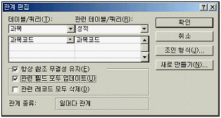
- <성적> 테이블의 ‘과목코드’를 변경하면 이에 관련된 <과목> 테이블의 ‘과목코드’ 필드 값도 모두 변경된다.
- <과목> 테이블의 ‘과목코드’를 변경하면 이를 참조하는 <성적> 테이블의 ‘과목코드’ 필드 값도 모두 변경된다.
- <과목> 테이블의 특정 레코드를 삭제하면 이를 참조하는 <성적> 테이블의 레코드도 삭제된다.
- <성적> 테이블에서 참조하는 있는 <과목> 테이블의 ‘과목코드’ 필드의 값을 변경할 수 없다.
(정답률: 58%)
53. 입력란(Text Box) 컨트롤에 대한 설명으로 가장 적합한 것은?
- 제목, 캡션 등과 같은 문자열을 나타낼 때 주로 사용한다.
- 항상 언바운드이다.
- 다른 폼을 여는 명령 단추를 만드는 데에 주로 사용된다.
- 테이블의 필드 값을 표시하거나 저장할 수 있다.
(정답률: 46%)
54. 다음은 색인(Index)에 대한 설명이다. 가장 옳지 않은 것은?
- 일련번호, 메모, 하이퍼링크, OLE 개체 등과 같은 데이터 형식의 필드에 대해서는 색인을 설정할 수 없다.
- 색인을 많이 설정하면 테이블의 변경 속도가 저하될 수 있다.
- 하나의 필드나 필드 조합에 인덱스를 만들어 레코드 찾기와 정렬을 효율적으로 수행할 수 있게 한다.
- 레코드를 변경하거나 추가할 때마다 자동으로 업데이트 된다.
(정답률: 52%)
55. 페이지 설정 대화상자에 대한 설명으로 옳지 않은 것은?
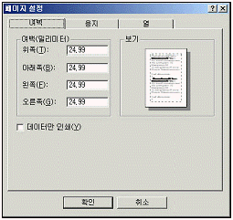
- 「데이터만 인쇄」옵션을 선택하면 레이블과 컨트롤의 테두리, 눈금선이나 선, 사각형과 같은 그래픽 요소들은 인쇄되지 않는다.
- 데이터시트를 인쇄할 경우에는「데이터만 인쇄」옵션이 표시되지 않고「머리글 인쇄」옵션이 표시된다.
- 보고서에서의 페이지 설정은 저장이 되지 않으므로 인쇄할 때마다 설정을 해주어야 한다.
- 페이지 설정 대화상자를 표시하려면「파일」-「페이지 설정」을 선택한다.
(정답률: 56%)
56. 다음 보고서에서 순번 항목과 같이 그룹내의 데이터에 대한 일련번호를 표시하기 위해 해당 입력란 컨트롤을 설정하는 방법으로 가장 적절한 것은?
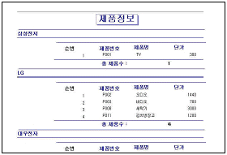
- 입력란의 컨트롤 원본을 ‘=1’로 지정하고, 누적총계를 ‘그룹’으로 지정한다.
- 입력란의 컨트롤 원본을 ‘+1’로 지정하고, 누적총계를 ‘그룹’으로 지정한다.
- 입력란의 컨트롤 원본을 ‘+1’로 지정하고, 누적총계를 ‘전체’로 지정한다.
- 입력란의 컨트롤 원본을 ‘=1’로 지정하고, 누적총계를 ‘전체’로 지정한다.
(정답률: 65%)
57. 다음은 보고서 작성시 입력란(text box)의 속성에 대한 설명이다. 가장 관련 있는 속성은?
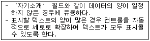
- 텍스트 맞춤
- 형식
- 테두리 스타일
- 확장가능
(정답률: 62%)
58. 다음 질의를 수행 한 결과에 대한 설명으로 가장 옳은 것은?
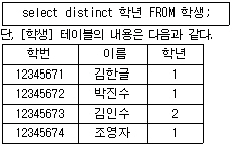
- 조회 결과의 레코드 수는 4개이다.
- 조회 결과 필드수는 3개이다.
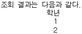
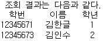
(정답률: 63%)
59. 다음은 테이블 조인(JOIN)에 대한 설명이다. 가장 적절한 것은?
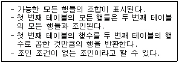
- INNER JOIN
- LEFT JOIN
- RIGHT JOIN
- CROSS JOIN
(정답률: 59%)
60. 다음에서 설명하는 컨트롤로 가장 적절한 것은?
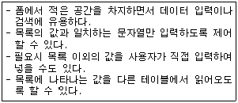
- 옵션 그룹
- 콤보 상자
- 탭 컨트롤
- 목록 상자
(정답률: 59%)
BPS는 비트 전송 속도를 나타내는 단위로, 플로터와 컴퓨터 간의 데이터 전송 속도를 측정하는 데 가장 적절한 단위입니다. CPS는 초당 문자 수, IPS는 초당 이미지 프레임 수, DPI는 인치당 도트 수를 나타내는 단위이므로 전송 속도를 측정하는 데는 적절하지 않습니다.